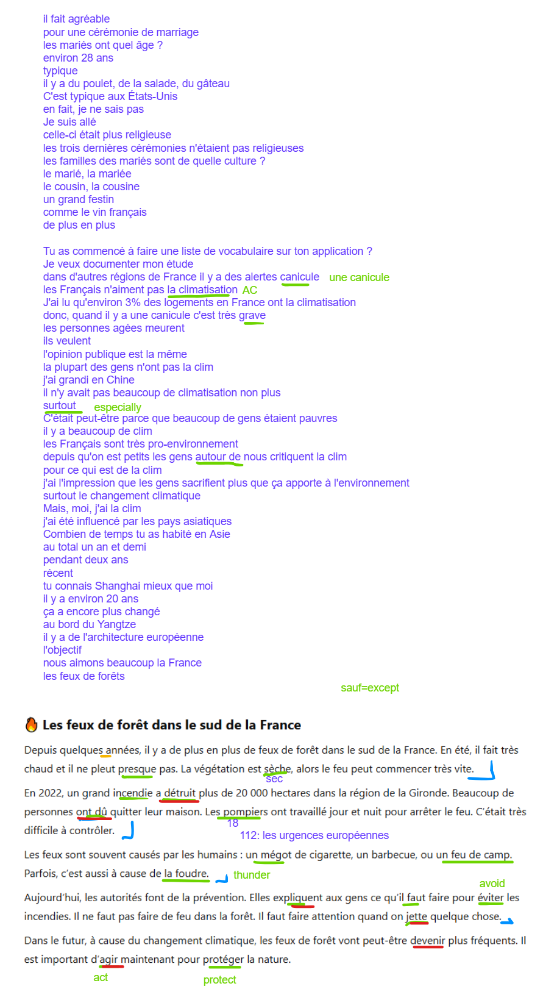
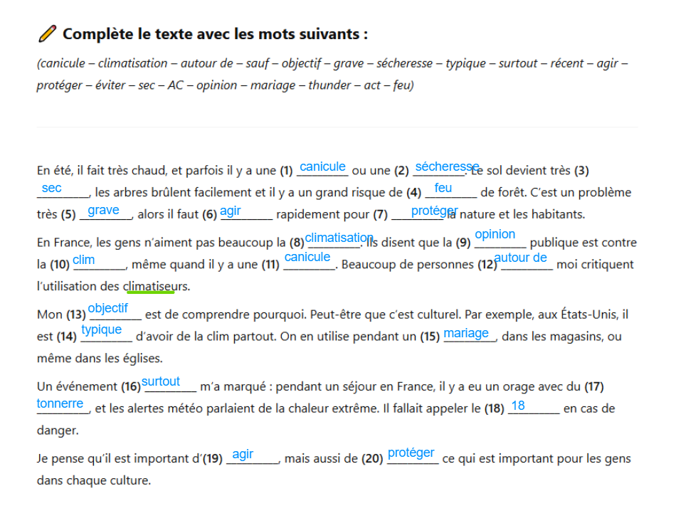

1 Dialogue
Il fait agréable
Pour une cérémonie de marriage
Les marié ont quel âge?
Enrivon 28 ans
Typique
Il y a du poulet, de la salade, du gâteau
c’est typique aux États-Unis
En fait, je ne sais pas
Je suis allé
Celle-ci était plus religieuse
Les trois dernières cérémonies n’étaient pas religieuses
Les familles des mariés sont de quelle culture?
Le marié, la mariée
Le cousin, la cousine
Un grand festin1
Comme le vin français
De plus en plus2
1 festin = banquet
2 more and more
Tu as commencé à faire une liste de vocabulaire sur ton application?
Je veux documenter mon étude
Dans d’autres régions de France il y a des alertes canicule
J’ai lu qu’environ 3% des logements en France ont la climatisation
Donc, quand il y a une canicule c’est très grave
Les personnes agées meurent
Ils veulent
L’opinion publique est la même
La plupart3 des gens n’ont pas la clim
J’ai grandi en Chine
Il n’y avait pas beaucoup de climatisation non plus4
surtout
C’etait peut-être parce que beaucoup de gens êtaient pauvres
Ill y a beaucoup de clim
Les Français sont très pro-environnement
Depuis qu’on est petits les gens autour de nous critiquent la clim
Pour ce qui est de5 la clim
J’ai l’impression que les gens sacrifient plus que ça apporte à l’environnement
Surtout6 le changement climatique
Mais, moi, j’ai la clim
J’ai été influencé par les pays asiatiques
3 most, the majority of
4 non plus = either, used like “aussi” but in a negative context
5 as for, regarding
6 especially
Combien de temps tu as habité en Asie
Au total un an et demi
Pendant deux ans
récent
Tu connais Shanghai mieux que moi
Il y a environ 20 ans
Ça a encore plus changé
Au bord du Yangtze
Il y a de l’architecture enropéenne
Nous aimons beaucoup la France
Les feux de forêts

1.1 Reading Exercise
Complete le texte avec les mots suivants:
Canicule, climatisation, autour de, sauf, objectif, grave, sécheresse, typique, surtout, récent, agir, protéger, éviter , sec, AC, opinion, mariage, thunder, act, feu
En été, il fait très chaud, et parfois il y a une (1) canicule ou une (2) sécheresse. Le sol devient très (3) sec, les arbres brûlent facilement et il y a un grand risque de (4) feu de forêt. C’est un problème très (5) grave, alors il faut (6) agir rapidement pour (7) protéger la nature et les habitants.
En France, les gens n’aiment pas beaucoup la (8) climatisation. Ils disent que l’ (9) opinion publique est contre la (10) clim, même quand il y a une (11) canicule. Beaucoup de personnes (12) autour de moi critiquent l’utilisation des climatiseurs.
Mon (13) objectif est de comprendre pourquoi. Peut-être que c’est culturel. Par exemple, aux États-Unis, il est (14) typique d’avoir de la clim partout. On en utilise pendant un (15) marriage, dans les magasins, ou même dans les églises.
Un événement (16) surtout m’a marqué: pendant un séjour en France, il y a eu un orage avec du (17) tonnerre, et les alertes météo parlaient de la chaleur extrême. Il fallait appeler le (18) 18 en cas de danger.
Je pense qu’il est important d’(19) agir, mais aussi de (20) protéger ce qui est important pour les gens dans chaque culture.
